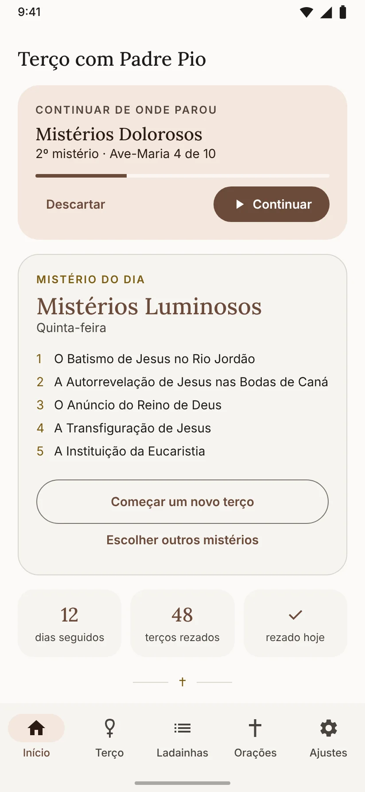
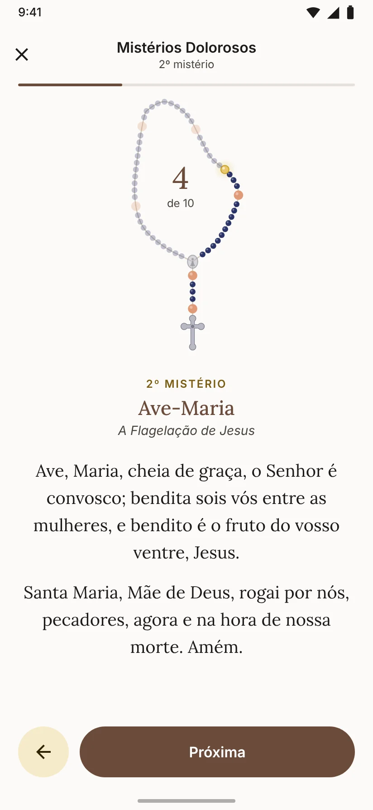
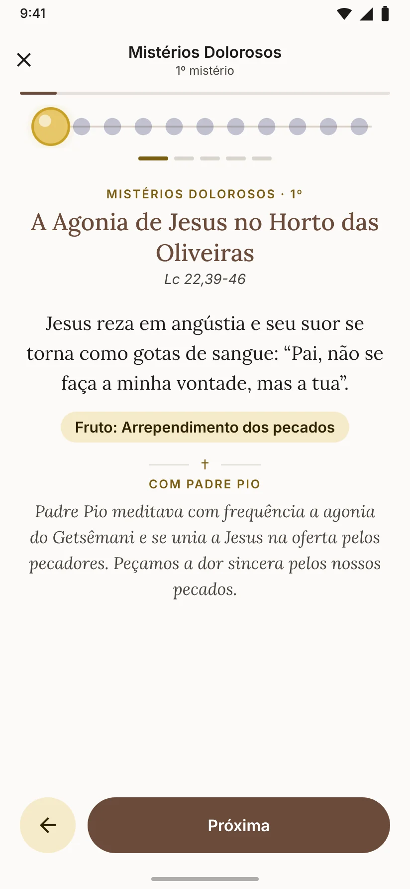
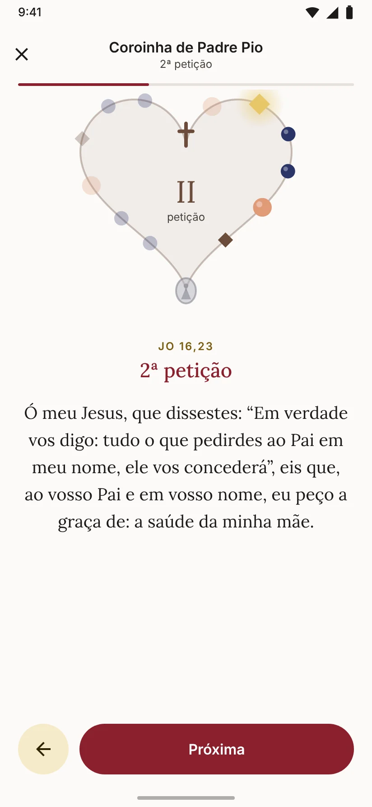
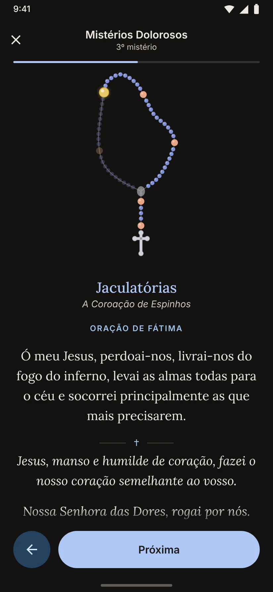
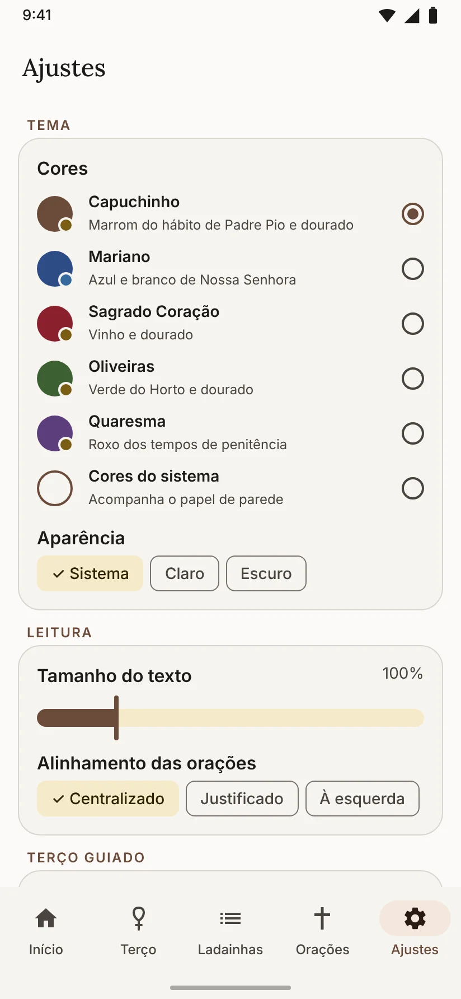

Como rezar o terço no app
Do primeiro Sinal da Cruz até a Salve-Rainha, o aplicativo guia cada oração. Estes são os passos de um terço completo.
-
Escolha os mistérios
Ao abrir o app, a tela inicial já mostra o mistério do dia: Gozosos na segunda e no sábado, Dolorosos na terça e na sexta, Gloriosos na quarta e no domingo, e Luminosos na quinta.
Toque em Rezar o Terço. Para rezar outros mistérios, abra a aba Terço e escolha o que preferir.

-
Reze acompanhando as contas
O terço aparece desenhado no formato de um terço de verdade. A conta dourada é a oração da vez; as que você já rezou ficam coloridas e as que faltam, mais claras. No centro aparece a contagem da dezena, como "4 de 10".
O texto completo de cada oração fica logo abaixo, em letra grande e centralizada.

-
Avance do jeito mais confortável
Para passar para a próxima oração, use o que for mais prático no momento:
- toque em qualquer lugar do terço desenhado;
- toque no botão Próxima, ou na seta para voltar;
- deslize o texto para o lado;
- aperte o botão de volume: baixar avança e aumentar volta. Assim dá para rezar sem olhar para a tela.
O celular vibra de leve a cada conta e mais forte quando começa um novo mistério. A tela fica acesa enquanto você reza.
-
Medite cada mistério
No começo de cada dezena, o app apresenta o mistério com a passagem da Bíblia, uma meditação curta, o fruto do mistério e uma reflexão ligada à vida de Padre Pio.
Se preferir mais espaço para o texto, ative o desenho Compacto nos Ajustes: ele mostra só as contas da dezena atual.

-
Pause e continue depois
Precisou parar? Toque no X no alto da tela e confirme. O app guarda a oração em que você estava.
Quando voltar, a tela inicial mostra o cartão Continuar de onde parou, com o ponto exato do terço. Se você começar outro terço, o app pergunta antes se prefere continuar o que estava em andamento.
Mais para rezar
Além do terço, o app reúne as devoções que acompanharam Padre Pio.

A Coroinha de Padre Pio
A Coroinha ao Sagrado Coração de Jesus, que ele rezava todos os dias por quem pedia suas orações. Escreva a sua intenção no início e ela aparece em cada uma das três petições. Ela está na tela inicial e na aba Terço.

Jaculatórias e Oração de Fátima
Depois de cada Glória, o app sorteia jaculatórias, sem repetir no mesmo terço. Você escolhe de nenhuma a cinco por dezena e se prefere o "Ó meu Jesus" tradicional ou a versão com pedidos pelo Papa, pelas famílias e pela paz.

Do seu jeito
Em Ajustes você troca o tema (Capuchinho, Mariano, Sagrado Coração, Oliveiras ou Quaresma), usa o modo escuro, aumenta a letra e escolhe se as orações ficam centralizadas, justificadas ou à esquerda.
Perguntas frequentes
Preciso de internet para usar?
Não. Todas as orações, mistérios, ladainhas e jaculatórias ficam no próprio aplicativo. Depois de instalado, ele funciona em qualquer lugar, até no modo avião.
O aplicativo coleta meus dados?
Não. O app não tem cadastro, não tem anúncios e não envia nada para a internet. Suas preferências e o ponto em que você parou ficam guardados só no seu celular. Os detalhes estão na política de privacidade.
Posso rezar mistérios diferentes dos do dia?
Pode. Abra a aba Terço e toque em Rezar no conjunto de mistérios que quiser.
Como incluo a Ladainha de Nossa Senhora no terço?
Em Ajustes, na parte Terço guiado, ative Ladainha de Nossa Senhora. Ela entra depois da Salve-Rainha a partir do próximo terço. Todas as ladainhas também podem ser lidas na aba Ladainhas.
Mudei uma opção, mas o terço continuou igual. Por quê?
As opções de oração valem a partir do próximo terço. Um terço que já estava em andamento continua exatamente como foi começado, com as mesmas jaculatórias, para você retomar sem surpresas.
A letra está pequena. Como aumento?
Em Ajustes, na parte Leitura, arraste Tamanho do texto. Há uma prévia logo abaixo para você conferir antes de rezar.
As frases de Padre Pio são oficiais?
São frases tradicionalmente atribuídas a ele e muito difundidas entre os devotos, em tradução livre. As meditações e a Ladainha de São Pio foram escritas para o app e são de uso devocional.